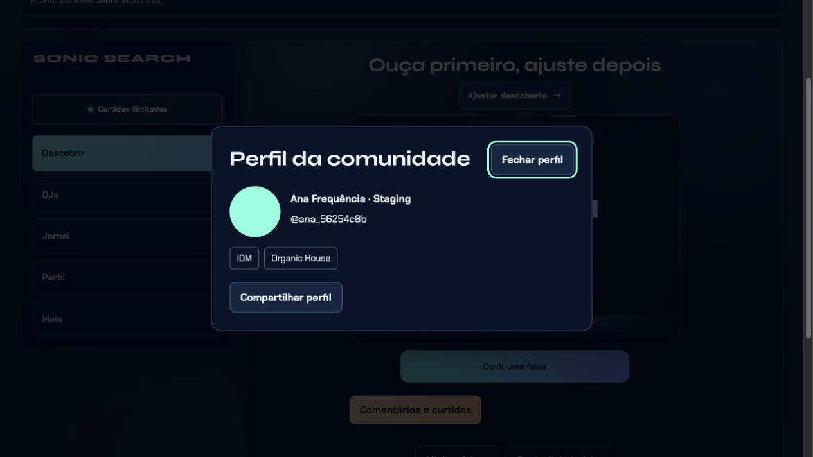
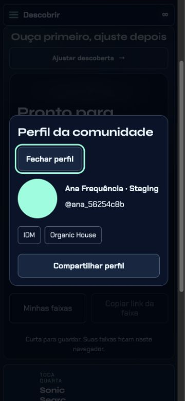

Revisão web · 5 de novembro de 2026
Perfis pessoais e interações ligados à conta
Foto, nome, @usuário exclusivo e até 12 preferências musicais explícitas. O perfil compartilhável mostra apenas os campos autorizados. Os estilos escolhidos orientam a descoberta sem substituir filtros, descartes ou o histórico privado.
Validado em um Supabase separado, com duas contas fictícias. A produção permanece com os recursos novos desativados. Nenhuma atualização foi enviada à Apple nesta etapa.
Abrir prévia com serviços reais de teste · Branch de revisão no GitHub
O que mudou
- Editor com foto processada, prévia da aparência pública, busca de estilos, controles de privacidade e mensagens de erro que preservam o rascunho.
- Link de perfil acessível a visitantes somente quando o dono autoriza essa audiência. Perfis antigos mantêm sua privacidade anterior.
- Curtidas e comentários usam a identidade autenticada; o autor abre o perfil correspondente. Compartilhamento mantém o destino correto e não transporta credenciais.
- Trocar de conta limpa foto, preferências, comentários e rascunhos da conta anterior. Preferências inferidas, e-mail, histórico e Sonic DNA não entram na projeção pública.
Problemas corrigidos durante a revisão
- Reenvio de comentário após perda da resposta podia criar duplicata: cada tentativa agora tem uma identificação estável.
- O painel de vídeo compartilhado podia reabrir depois de fechado quando a configuração terminava de carregar.
- O ambiente real ainda exigia um código antigo de beta para comentários. O acesso agora exige conta autenticada e a ativação explícita do recurso.
- Os limites dos comentários dependiam de Redis. Agora há um contador atômico por conta no próprio Supabase; falhas impedem a operação, sem remover o limite.
- Foram adicionados limites de tempo às consultas de autenticação, comentários e bloqueios para evitar esperas indefinidas.
Evidência da prévia
Conta fictícia de staging. A imagem verde foi enviada e recuperada do Storage privado. O visitante vê nome, foto e estilos autorizados; a bio privada não aparece.

Computador, visitante sem login.
Tela estreita de 360 px úteis.Validação e limites
| Camada | Resultado |
|---|
| Testes locais | 23 suítes passaram, incluindo privacidade, SQL, descoberta, isolamento entre contas, áudio e limites. O teste local usa Auth e Storage simulados; essa limitação está registrada em seu relatório. |
| Serviços reais | Auth, renovação de sessão, PostgREST, RLS, RPC e Storage passaram. Foram testados nome único, publicação por escolha explícita, fotos sem metadados, curtidas, comentários, edição, denúncia, bloqueio e exclusão. |
| Navegador conectado ao staging | Login com senha fictícia real, edição e salvamento, persistência após recarregar, saída da conta, cópia de link limpo e leitura anônima com campos privados ocultos. |
| Ainda não validado | Retorno de OAuth Google/Apple no novo ambiente, aplicativo nativo do iPhone e implantação pública. O staging usa login por senha de teste, explicitamente identificado. |
Ambiente e próxima liberação
Projeto separado sonic-social-staging, referência uauhiqrflfjhestbupjv, criado no plano Free existente. Nenhum repositório foi conectado ao projeto. Credenciais ficam em arquivo local ignorado pelo Git, com permissão 0600; não estão neste relatório nem na branch.
A produção ainda não tem as novas colunas, tabelas e o bucket de fotos, conforme a checagem somente de leitura. Para ativar, será necessário revisar e aplicar as migrações incrementais em produção, conferir o login Google/Apple e ativar as flags específicas. O arquivo staging-bootstrap.sql recusa bancos com perfis ou contas e serve exclusivamente para um staging vazio; não deve ser usado em produção.
A branch codex/social-profiles-20261105 está configurada sem deploy automático. Depois da revisão web, a etapa do iPhone ainda requer gerar e testar o pacote nativo, revisar as informações da loja e enviar a versão à Apple.
Reproduzir os testes
npm run test:social-profiles executa a validação local. npm run test:social-profiles:remote exige o arquivo privado do staging e recusa outra referência de projeto. npm run preview:social-staging abre o servidor local na porta 8802. As credenciais fictícias são criadas sem enviar e-mail e armazenadas apenas em .vendor/social-staging-tools/test-identities.json, também ignorado e protegido.